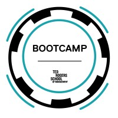

Projects

2025-26 Ontario Income Tax Calculator
A Python program that estimates Federal and Ontario income tax for the 2025–26 tax year. The tool calculates tax results based on user financial inputs by applying the appropriate federal and Ontario tax brackets, and includes a unique reference ID system that allows completed calculations to be saved and retrieved later. The project was built in Python and uses modular program design, user input handling, conditional logic, and file-based data storage to simulate a simple tax software workflow.

Basketball Statistical Analysis Tool
A Python analytics project that examines multi-season NBA player statistics to detect breakout performances and identify emerging talent through statistical improvements and performance trends. Player data is collected using a REST API and is analyzed using Pandas and NumPy, with a custom scoring model used to rank players based on year-over-year performance changes.

Library Management System
Built a Java-based library management system using Java Swing for the UI, JDBC for database connectivity, and MySQL for persistent storage. The application follows a layered design, where user interactions in the GUI are processed through a service layer and executed as SQL queries via DAO classes. Supports full CRUD operations for books and members, as well as loan tracking with availability updates.
Certifications
Business Intelligence Foundations
Ted Rogers School of Management - Toronto Metropolitan University · Issued May 2026
Data Analyst Foundations Badge 1.0
Ted Rogers School of Management - Toronto Metropolitan University · Issued May 2026

Python 2.0
Bootcamps at the Ted Rogers School of Management · Issued June 2026
SQL 2.0
Bootcamps at the Ted Rogers School of Management · Issued June 2026
Power BI 2.0
Bootcamps at the Ted Rogers School of Management · Issued June 2026
Tableau 2.0
Bootcamps at the Ted Rogers School of Management · Issued June 2026
Excel 2.0 — Business Fundamentals & Financial Management
Bootcamps at the Ted Rogers School of Management · Issued June 2026